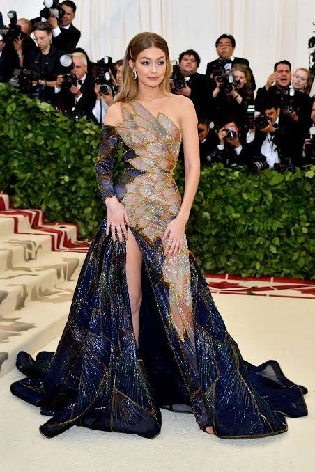
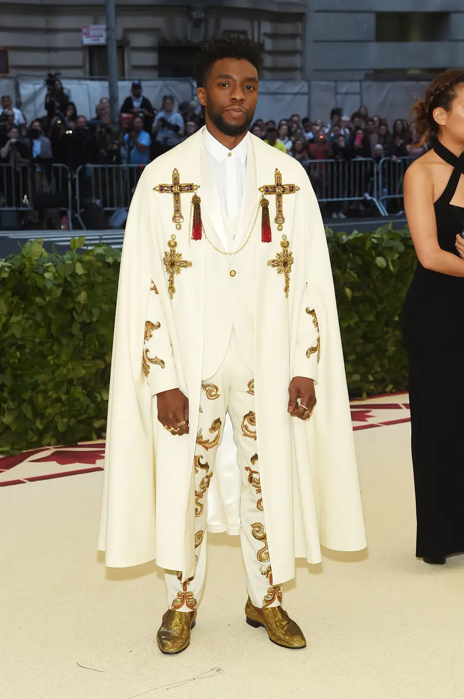

Sala 1 · 2018
Heavenly
Bodies
La moda y la imaginación católica
Haz scroll para recorrer la sala →
Sala 1 · 2018
La moda y la imaginación católica
La exposición del Costume Institute exploró cómo la iconografía y los objetos religiosos católicos han inspirado a diseñadores de todas las épocas. La gala se celebró en mayo de 2018.


¡Rihanna fue una de las anfitrionas de la noche y llegó vestida como una auténtica figura papal! Su look de Maison Margiela, diseñado por John Galliano, incluía una mitra (el sombrero tradicional de los papas) hecha a medida y decorada con cristales. Lo interesante es que la temática de ese año, Heavenly Bodies: Fashion and the Catholic Imagination, generó tanta inspiración que muchos diseñadores reinterpretaron símbolos religiosos a través de la alta costura.
Ver fuente →
